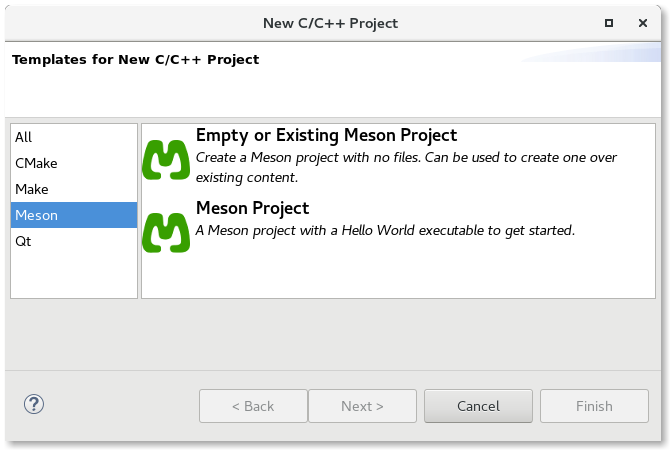
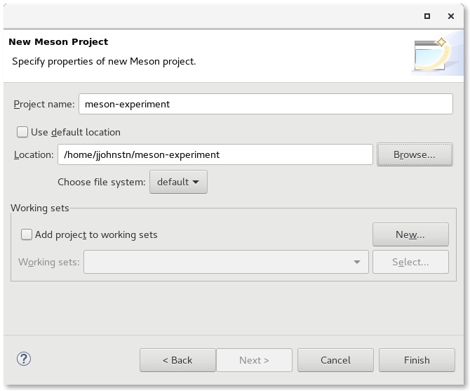

| Creating a Meson Project | ||
|---|---|---|
|
|
|
|
| Supported Environments | Configuration | |
To create a Meson project, use File -> New -> C/C++ Project Either find the Meson projects in the list of all projects or click on Meson in the left-hand column to filter out non-Meson projects.

There are two choices: Empty Project or Meson Project. Since Meson projects configure whether they support C, C++, or both, there is no need to specify a language as is done for the old Managed Build projects. The Empty Project template means that no files will be supplied to the new project while the Meson Project is a sample C hello world program that uses Meson for configuring the build.
To use a Meson project you have checked out in your system, choose the Empty Project template and then change the location of the project to point to where the project exists on your system.

The Meson plug-ins will perform builds in the build directory with a separate directory per configuration. (e.g. {$Project}/build/default). By default, there are two basic configurations, run and debug.
|
|

|
|
| Supported Environments | Configuration |